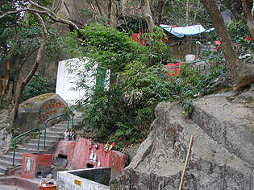
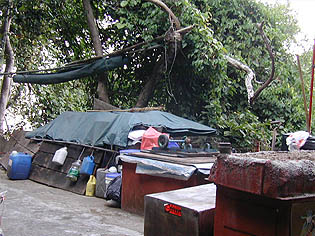

婚姻石 Lover's Rock
灣仔の南、市街からはずれた山の中腹に婚姻石という巨石がある。
ここは男女の婚姻関係に御利益があるというところで、香港の人々の篤い民間信仰スポットとなっているというので出かけてみた。
別に男女の婚姻関係に問題を抱えているわけでは無いよ。
遊歩道を歩く事20分、問題の婚姻石のある場所に付いた。
うっ
何というか、陰気極まる場所だ。
あちこちの岩陰には赤く塗られた祭壇がある。それが荒っぽいペンキ塗りなので、血を連想させる。
ここがこんなことになってしまったのは1964年にこの石に願いを叶えてもらったという人達が石に彩色をし始めて聖地に祭り上げてしまったからだ。

地元の小金持なんかがジョギングするような遊歩道沿いにいきなり現れる赤い聖地。
ここを走り抜けるジョガーは心無しか伏し目がち。
岩の窪みに設けられた祭壇。いい加減な鉄パイプといい加減なビニールシートで覆われた聖地。
荒っぽいだけにここをつくった人達の本気具合がビシバシ伝わってくる。
登っていくとメインの婚姻石が見えてくる。高さは10メートル程か。
ここも赤く塗られており無気味な雰囲気。香港のお寺や街角などではよく赤く塗られた祠があるが、これほど大規模な「いい加減塗り」はない。
一説にはチンポ石との噂も。
石の中程には線香立て代わりの空き缶やお供物などがあり現在も信仰されているのが判る。
山の中腹なので眺めがよい。背後には香港の高層ビルが。
写真を撮っているといつのまにか背後にかなり際どい風体のおっさんが現れ何やら広東語でがなりはじめた。
こちらが広東語を解さないと判るといきなり花火みたいに長い線香に火をつけ有無もいわず手渡してくる。
ここの聖地を赤く塗りたくった張本人だと思います。多分。
ああ〜、幾らかお布施置いてけとか言われるんだろうなあ〜
とか思いながらも、面白いのでおっさんになされるがままになってみた。
石の下には隙間があって潜れるようになっている。胎内潜りみたいなものか。
おっさん、ここを潜れと言う。もっとも言われなくても潜るけど。
幾らかの布施を渡し、帰る途中ここの入り口付近にこんなものを見つけた。

おっさん、こんなトコに住んでるのかあ〜
次へ行きましょう 香港珍寺遊戯に戻る 珍寺大道場に戻る